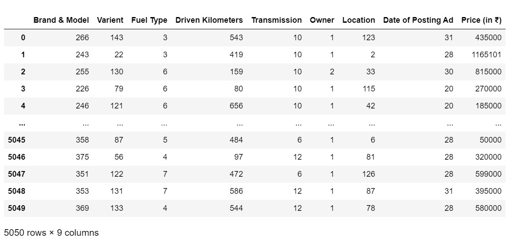
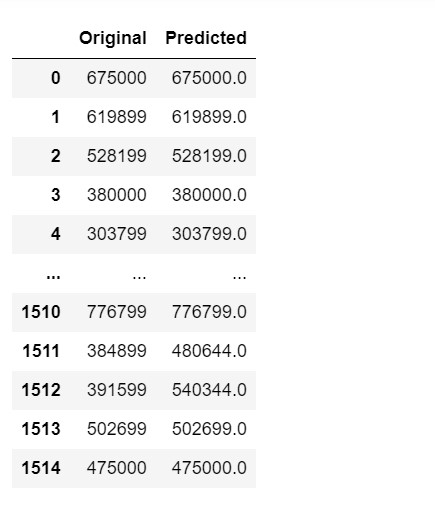

Featured Project

Step 1: Collecting Sample
I have used an open source sample
{DATASET}
Abstract of the Project
The pre-owned vehicle market is a developing business with a market esteem that has almost multiplied itself in earlier years.
The ascent of online sites and other instruments like it has made it more straightforward for the two purchasers and merchants to improve
comprehension of the variables that decide the market worth of a preowned vehicle. In light of a set of variables,
Machine Learning calculations might be used to conjecture the cost of any vehicle.
The informational collection will remember data for an assortment of vehicles.
There will be data with respect to the vehicle's specialized components,
for example, the motor kind, fuel type, total driven kilometres and that's only the tip of the iceberg, for each vehicle.
There is no inclusive instrument for building up the retail cost of utilized vehicles in light of the fact that
unique sites utilize various techniques to make it. By utilizing measurable models to expect to value, it is conceivable
to acquire a fundamental value gauge without entering every one of the subtleties into the ideal site.
The fundamental motivation behind this study is to think about the precision of two distinct expectation models
for assessing a pre-owned vehicle's retail cost.
Subsequently, we offer a Machine Learning-based philosophy at anticipating the costs of second-hand vehicles in light of their attributes.
This philosophy can help purchasers hoping to buy a pre-owned vehicle in making more informed decisions.
Clients can now search for all vehicles in a district without actual endeavours, whenever and from any area
Step 2: PLotting Graphs
- SVR
- Linear Regression
- SGD Regressor
- KNN
- Random Forest Regressor
Regression is a method for predicting a dependent component with the help of independent variables.
The method is commonly used to predict and calculate correlations between independent and dependent variables.
The regression model establishes a linear or exponential connection between independent and dependent variables.
Linear regression is a type of regression analysis in which the independent(x) and dependent(y)
variables can be constrained in a linear relationship.
The red line in the graph above is known as the best fit straight line.
We want to draw a line that best predicts the data points given the data points we have.
The line may be represented using the linear equation below.
y = a0 + a1 * x
The models used training and testing datasets are as followed:

OUTPUT
Step 3: Applying Major Algorithms
1.) The loss gradient is calculated each sample at a time, and the model is updated along the way using a decreasing strength schedule. SGD stands for Stochastic Gradient Descent.
2.) Algorithm Calculating the average of the numerical goal of the K nearest neighbours is a straightforward implementation of KNN regression. An inverse distance weighted average of the K closest neighbours is another method. The distance functions used in KNN regression are the same as those used in KNN classification.
3.) A regressor with a random forest. A random forest is a meta estimator that employs averaging to increase predicted accuracy and control over-fitting by fitting a number of classification decision trees on various sub-samples of the dataset.